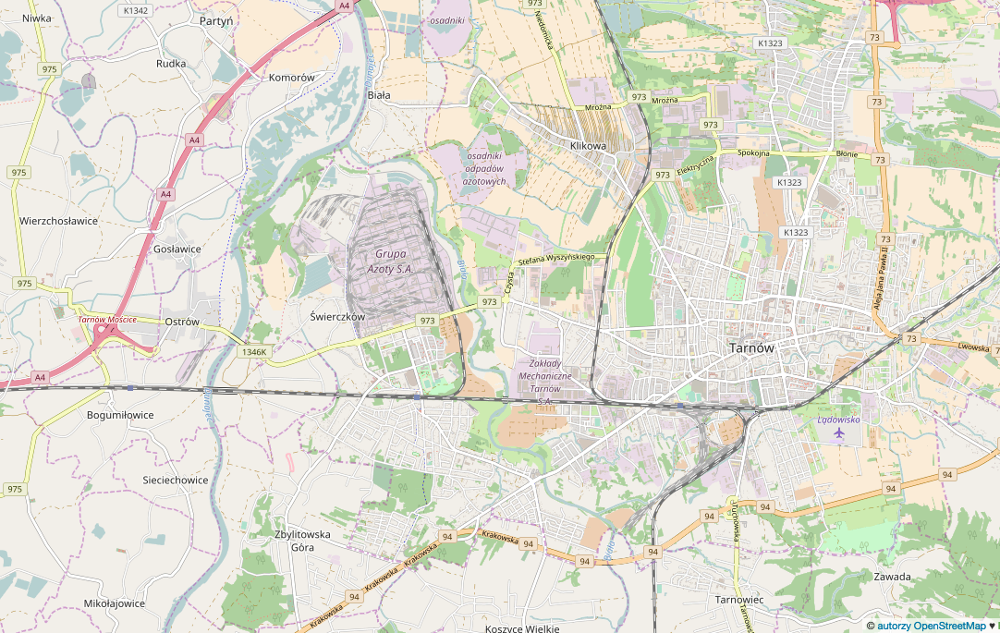

Toggle navigation
grupa azoty s.a.
Mapa
(current)
Scenariusze
Substancje
Autor
Jednostki produkcyjne:
Jednostka Biznesowa Nawozy
Segment Biznesowy Tworzyw
Centrum Energetyki
Centrum Infrastruktury
Jednostka Biznesowa Katalizatory
Instalacje JP Nawozy
Wydział Amoniaku
Instalacja Gazu Syntezowego
Instalacja Wodoru
Instalacja Amoniaku
Instalacja Wody Amoniakalnej
Wydział Kwasów Azotowych
Instalacja Kwasu Azotowego Technicznego
Instalacja Kwasu Azotowego Stężonego
Instalacja Nitroz
Wydział Nawozów
Instalacje Nawozowe
Instalacja Mączki Dolomitowej
Instalacje SB Tworzyw
Wydział WKS i SHA
Instalacja Azotynu Amonu
Instalacja Siarczanu Hydroksyloaminy
Instalacja Kwasu Siarkowego i Oleum
Wydział Cykloheksanonu, Utleniania
Wytwarzanie cykloheksanonu z fenolu i benzenu
Wydział Laktamu
Instalacja Kaprolaktamu
Wydział Polimeryzacji Kaprolaktamu
Wytwórnia Poliamidu PA-6
Wydział Tarnoformu i Formaliny
Instalacja Tarnoformu
Wydział Siarczanu Amonowego
Wytwórnia Siarczanu Amonu
Wydział Osłonek i Granulatów Modyfikowanych
Instalacja Procesu Modyfikacji Tworzyw (Compounding)
Instalacje Centrum Energetyki
Wydział Kotłowni i Nawęglania, Maszynowni i Gospodarki Wodnej, Zasilania i Zabezpieczeń
Instalacja Mazutowni, Uzdatnianie wody
Instalacje Centrum Infranstruktury
Wydział Produkcji i Dystrybucji Mediów
Gospodarka wodno-ściekowa, Oczyszczalnia ścieków i odpadów
Instalacje Jednostki Biznesowej Katalizatory
Instalacja Katalizatorów
